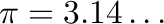
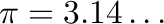

Next: Percent
Up: Operations
Previous: eq
Contents

Some special constants ( , , 0, 1,
) can be placed on the canvas, via two methods:
, , 0, 1,
) can be placed on the canvas, via two methods:
- By clicking on the relevant icon on the Fundamental Constants
(``constop'') toolbar; or
- By typing the constant name on the canvas, and pressing Enter (or
clicking OK) in the variable definition window. These names are: Euler
for ; pi for ; inf
for ; and the percent symbol for the percent operator (which
multiplies the input by 100).
Subsections